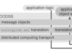

oodss
Object-Oriented Distributed Semantic Services
Object-oriented programming simplifies the job of
the software engineer by integrating data with algorithms. Distributed
software engineering is difficult, because data and algorithms are split
across a communication medium. Prior frameworks address the
representation of messages passing, but introduce problems by separating
the specification of message data structures from the programs that
operate on them. The Object-Oriented Distributed Semantic
Services (OODSS) framework supports object-oriented design in
distributed application software engineering by integrating message
specification with the algorithms that provide services, supporting data
abstraction. Services provided by application components are
encapsulated by translation scopes that are integrated with, not
separated from, the programming languages of software development.
Dynamic dispatch of overridden methods in polymorphic message class
instances facilitate engineering complex flows of control between
distributed application components. The job of the programmer is
simplified. Flexibility in message representation and network transport
is promoted.
The OODSS is part of the Interface Ecologylab Fundamental API, which is being released as open source. To incorporate OODSS into your own project take a look at the guide. You can check it out from svn here (username: anonymous, password: anonymous).
publications

Toups, Z.O., Kerne, A., Webb, A.,
A Lightweight Object-Oriented Distributed Services Framework for Engineering Interactive Applications,
Interface Ecology Lab Technical Report 10-01